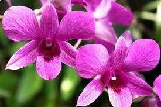
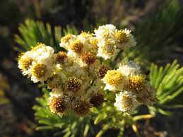
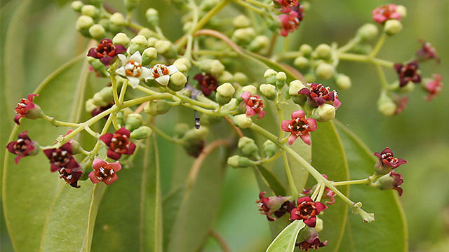

Anggrek Larat

| Kerajaan |
Plantae |
| Divisi |
Magnoliophyta |
| Kelas |
Liliopsida |
| Ordo |
Orchidales |
| Famili |
Orchidaceae |
| Genus |
Dendrobium |
| Spesies |
Dendrobium bigibbum |
Daun anggrek larat ini memiliki tekstur kaku dengan warna mulai dari hijau muda hingga hijau tua serta mengkilat dibagian permukaan daun.
Daun tersusun melekat pada batang, saling melekan dengan daun lain.
Bunga anggrek larat berwarna ungu muda, putih, serta kombinasinya. Mahkota bunga terdiri dari enam bagian mahkota bunga.
Bunga anggrek larat tersusun pada satu tangkai panjang. Setiap satu tangkai panjang ini terdapat banyak kuntum bunga.
Tanaman endemik Maluku ini dapat hidup pada kelembaban antara 50% dan 60%.
Secara umum dapat dikatakan bahwa anggrek larat hidup pada kelembaban rendah dan agak kering.
Suhu dingin yang lembab dapat menyebabkan tanaman anggrek larat yang sedang berbunga menjadi busuk.
Anggrek larat dapat ditanam di dalam pot dengan menggunakan media tanam kasar.
Media tanam kasar tersebut adalah terdiri dari campuran kayu cemara, potongan kulit kayu, perlite dan arang.
Media tanam diganti saat mulai longgar dan mulai membusuk.
Tanaman anggrek larat yang masih muda membutuhkan banyak air sedangkan yang sudah dewasa sedikit membutuhkan air.
Pot yang dapat digunakna adalah pot dari plastik atau gerabah.
Edelweiss Jawa

| Kerajaan |
Plantae |
| Divisi |
Angiospermae |
| - |
Eudikotil |
| - |
Asteridae |
| Ordo |
Asterales |
| Famili |
Asteraceae |
| Genus |
Anaphalis |
| Spesies |
A. javanica |
Anaphalis javanica, yang dikenal sebagai Edelweiss jawa (Javanese edelweiss) atau Bunga Senduro,
adalah tumbuhan endemik zona alpina/montana di berbagai pegunungan tinggi di Indonesia yang saat ini dikategorikan sebagai tumbuhan langka.
Tumbuhan ini dapat mencapai ketinggian 8 meter dan dapat memiliki batang sebesar kaki manusia, walaupun pada umumnya tidak melebihi 1 meter.
Edelweiss berkembang biak dengan cara generatif. Dengan serbuk-serbuk bunga yang ringan, maka mudah terbawa oleh angin.
Bunga Edelweis sering juga disebut sebagai Bunga Keabadian karena mampu tumbuh di tempat yang tandus dan bunganya tidak rontok karena pengaruh hormon tertentu
Bagian-bagian Edelweiss sering dipetik dan dibawa turun dari gunung untuk alasan-alasan estetis dan spiritual, atau sekadar kenang-kenangan oleh para pendaki.
Pada bulan Februari hingga Oktober 1988, terdapat 636 batang yang tercatat telah diambil dari Taman Nasional Gunung Gede Pangrango, yang merupakan salah satu tempat perlindungan terakhir tumbuhan ini.
Di Taman Nasional Bromo Tengger Semeru, tumbuhan ini telah dinyatakan punah.
Tempat terbaik untuk melihat Edelweiss berada di Tegal Alun (Gunung Papandayan), Alun-Alun Surya Kencana (Gunung Gede), Alun-Alun Mandalawangi (Gunung Pangrango), dan Plawangan Sembalun (Gunung Rinjani).
Cendana

| Kerajaan |
Plantae |
| Divisi |
Tracheophyta |
| Kelas |
Angiospermae |
| Ordo |
Santalales |
| Famili |
Santalaceae |
| Genus |
Santalum |
| Spesies |
S. album |
Cendana adalah pohon penghasil kayu cendana dan minyak cendana. Kayunya digunakan sebagai rempah-rempah, bahan dupa, aromaterapi, campuran parfum, serta sangkur keris (warangka).
Kayu yang baik bisa menyimpan aromanya selama berabad-abad. Konon di Sri Lanka kayu ini digunakan untuk membalsam jenazah putri-putri raja sejak abad ke-9.
Di Indonesia, kayu ini banyak ditemukan di Nusa Tenggara Timur, khususnya di Pulau Timor, meskipun sekarang bisa ditemukan pula di Pulau Jawa dan pulau-pulau Nusa Tenggara lainnya.
Terdapat dua jenis Cendana, yaitu Cendana Merah dan Cendana Putih.
Cendana Merah banyak tumbuh di daerah Funan dan India, sedangkan Cendana Putih banyak tumbuh di Nusa Tenggara Timur, antara lain di Pulau Flores, Alor, Sumba, Solor, Adonara, Lomblen, Pantar, Timor, Rote, dan Sabu.
Tanaman cendana mengandung minyak atsiri, dalm atsiri, dalam perdagangan minyak atsiri secara global dikenal beberapa jenis minyak atsiri alami dengan embel-embel sandalwood,
yaitu red sandalwood (Pterocarpus santalinus), Australian sandlwood (Santalum spicatum) dan West Indiessandalwood (Amyris balsamifera). Minyak atsiri yang berasal dari S. album dikenal dengan East Indies Sandalwood, True sandalwood.
Daun cendana merupakan daun tunggal. Daunnya yang berwarna hijau ini berukuran kecilkecil, 4–8 cm x 2–4 cm dan relatif jarang.
Bentuk daunnya bulat memanjang dengan ujung daun lancip (acute) dan dasar daun lancip sampai seperti bentuk pasak (cuneate); pinggiran daunnya bergelombang; tangkai daun, kekuning-kuningan, 1-1,5 cm panjangnya.
Perbungaannya (inflorescence) seperti payung menggarpu (cymose) atau malai (panicle), dengan hiasan bunga yang seperti tabling, berbentuk lonceng, panjang 2–3 mm, yang pada awalnya berwarna kuning, kemudian berubah menjadi merah gelap kecoklat-coklatan.
Pohon cendana berbunga sepanjang tahun.